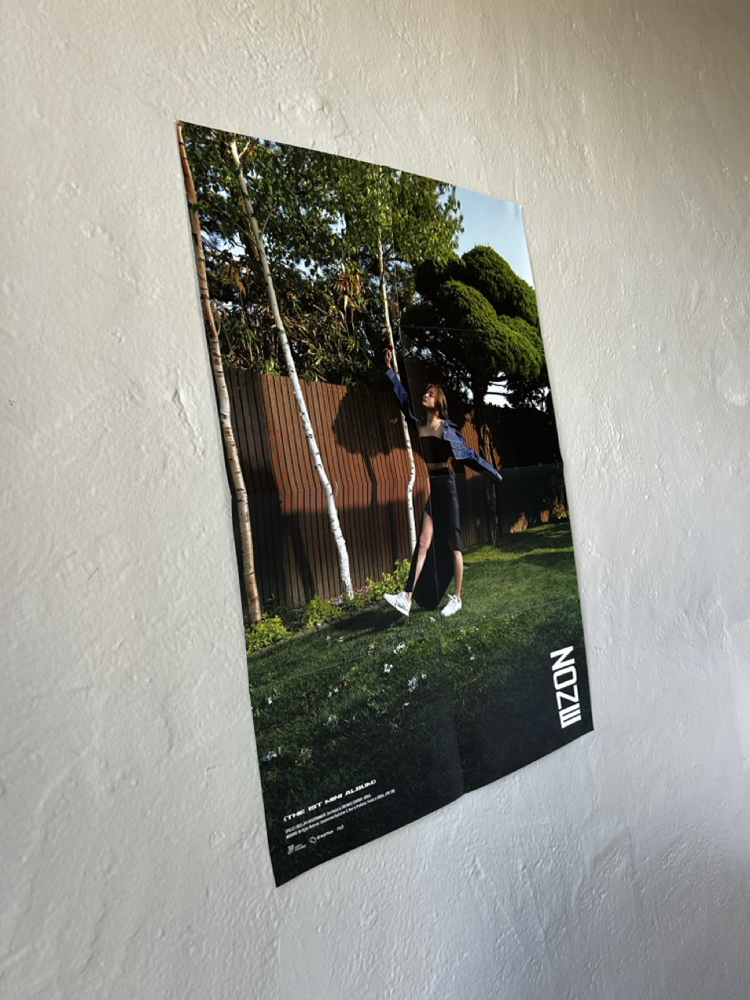

This project explores image warping and mosaicing techniques. I implemented homography computation, image warping with multiple interpolation methods, and blended multiple images together to create seamless panoramic mosaics. The project demonstrates how projective transformations can align images taken from the same camera position but different orientations.
Overview
Part A.1: Shoot and Digitize Pictures
I captured multiple sets of images with projective transformations between them by fixing the center of projection and rotating the camera. The images have 40-70% overlap to facilitate registration.
Image Set 1: Lamppost

Lamppost Top

Lamppost Bottom

Image 3
Image Set 2: [Description]

Image 1

Image 2

Image 3
Part A.2: Recover Homographies
Implementation
I implemented the computeH(im1_pts, im2_pts) function to recover the 3x3 homography matrix from point correspondences. The homography relates points between two images via p' = Hp, where H has 8 degrees of freedom.
Mathematical Formulation
[Explain your system of equations Ah = b and how you solve it using least squares]
Code Implementation
def computeH(im1_pts, im2_pts):
# Your implementation here
pass
Point Correspondences
I established point correspondences between image pairs using [your method]. Here are the visualizations:

Point Correspondences - Image Pair 1

Point Correspondences - Image Pair 2
Recovered Homography Matrices
Image Pair 1:
H = [[ ... , ... , ... ],
[ ... , ... , ... ],
[ ... , ... , ... ]]
Image Pair 2:
H = [[ ... , ... , ... ],
[ ... , ... , ... ],
[ ... , ... , ... ]]
Part A.3: Warp the Images
Image Rectification
I tested my homography and warping implementation by rectifying images containing rectangular objects.
Rectification Example 1: Poster

Original Image

Nearest Neighbor Interpolation

Bilinear Interpolation
Rectification Example 2: wall decoration
Original Image

Nearest Neighbor Interpolation
Bilinear Interpolation
Interpolation Comparison
Quality: The quality of the resulting image is better with bilinear interpolation than with the nearest neighbor approach. This is because the nearest neighbor approach tries to map partial pixels to the nearest full pixel, meaning that we lose the nuance and detail that may have been spread across pixels. For example, it is possible that some pixels in the original are never corresponding to a rounded pixel in the new version, meaning that that pixel value is completely lost. However, with the bilinear, the pixels will still contribute to the result, even if their weight is not 100%.
Speed: The nearest neighbor approach is quicker (7.0736 seconds instead of 7.3857 seconds after computing the homography). This is due to the simpler logic required of just rounding instead of checking more conditions. However, this is not a significant difference in time for the smaller imagegs that are lower quality and when we are only processing one image. If we have to process more images on a larger scale, we would have to take this difference into account more, as it would be compounded.
Part A.4: Blend the Images into a Mosaic
Blending Procedure
[Explain your blending approach: weighted averaging, alpha channel, distance transform, etc.]
Mosaic 1: [Description]

Source Image 1

Source Image 2

Source Image 3

Final Mosaic 1
Mosaic 2: [Description]

Source Image 1

Source Image 2

Source Image 3

Final Mosaic 2
Mosaic 3: [Description]

Source Image 1

Source Image 2

Source Image 3

Final Mosaic 3